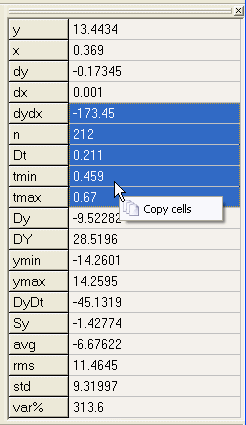

Interface
The pane grid

With this control you can view some quantities
measured on current selected track during
Measure mode.
Put the following strings in the
PaneQuantities option
to customize displayed quantities.
| Label | Description | Note |
| Point quantities | ||
y |
Measure point ordinate | Is the screen coordinate in physical space |
x |
Measure point abscissa | Is the screen coordinate in physical space |
dy |
Ordinate difference with contiguous point | |
dx |
Abscissa difference with contiguous point | |
dydx |
Derivative (dy/dx) | |
| Interval quantities | ||
n |
Number of embraced samples in selected interval | All the following interval quantities are commputed using this set of samples |
Dt |
Independent variable interval | Equal to tmax-tmin |
tmin |
First value of independent variable interval | |
tmax |
Last value of independent variable interval | |
Dy |
Dependent variable variation | |
DY |
Overall dependent variable sweep | Equal to ymax-ymin |
ymin |
Minimum ordinate value | |
ymax |
Maximum ordinate value | |
DyDt |
Incremental ratio | Equal to Dy/Dt |
Sy |
Partial sum of y·dt | This approximates the integral between tmin and tmax |
avg |
Mean value, average | |
rms |
Root Mean Square | |
std |
Standard deviation | A way to represent the fluctuation of a signal around its average value. Defined as the square-root of the average of the deviations squared, where the deviation is the difference between a sample and the mean. If the data distribution is approximately normal then about 68% of the values are within (avg±std), about 95% of the values are within (avg±2·std) and about 99.7% lie within (avg±3·std). For general distribution consider the Chebyshev's inequality: no more than 1/k² of the values are more than k·std away from the mean. |
std% |
Deviation percentage respect mean | Defined as 100·2.576·std/avg,
represent the half band in which falls
at least the 85% of samples
(99% for normal distributions).
|
mad |
Mean Absolute Deviation (unavailable) | Another way to express how much the signal vary rexpect its average value. Defined as the average difference respect mean value. This quantity should be unavailable because requires two passes. |
var% |
Maximum percentual variation respect mean | Defined as 100 * max(ymax-avg,avg-ymin)/avg |